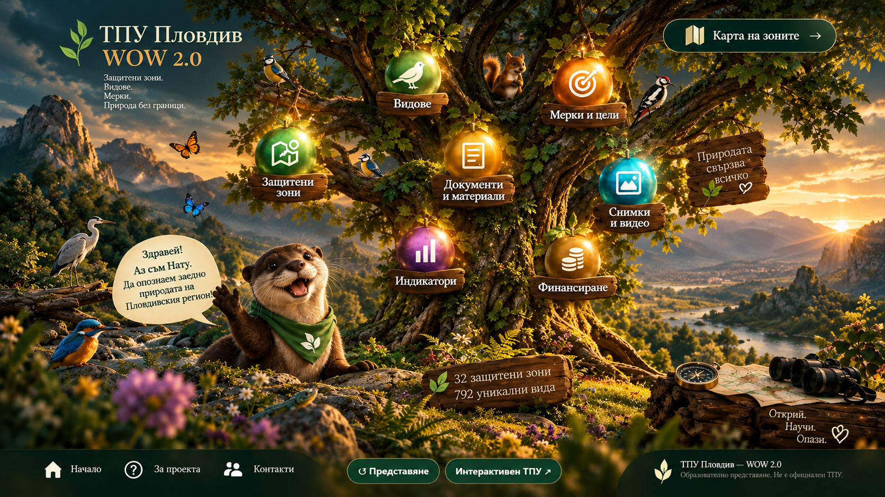

01 · Основен ТПУ
Основният документ на териториалния план за управление.

Видеото все още не е налично в публикувания пакет. Върни се към дървото и опитай отново след възстановяване на оригиналния файл.
Документалният пакет и цифровият фотоархив — в единна навигация, съобразена с одобрената визия на WOW 2.0.
Основният документ на териториалния план за управление.
Обобщаващ документ от наличния работен пакет.
Презентационна версия V64.60.
Картографският PDF, наличен в работния пакет.
Фотоархивът с изображения на видове и природни обекти.
WOW 2.0 е образователно представяне и не замества официалния нормативен ТПУ. Наименованията на PDF файловете отразяват наличните версии в този архив.